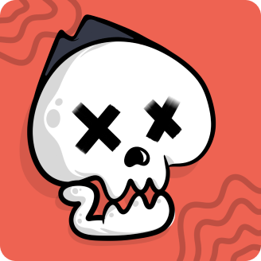
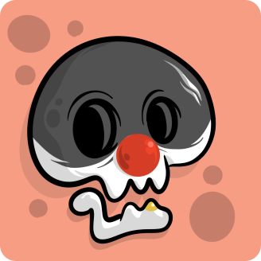
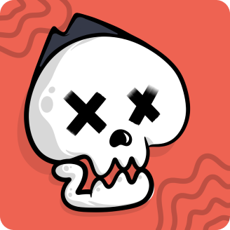
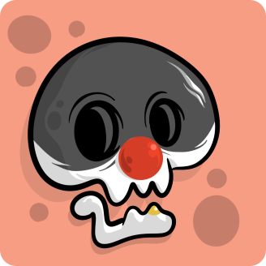


 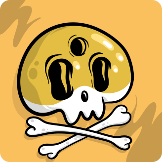
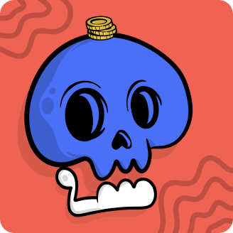
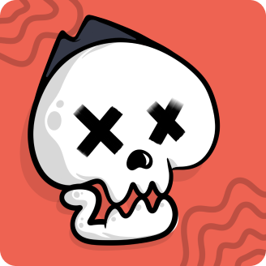
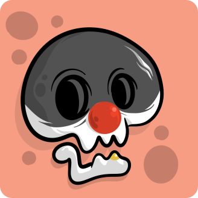
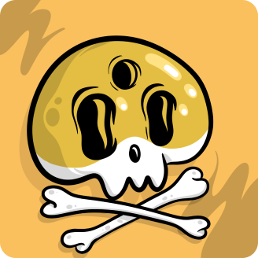
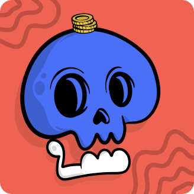
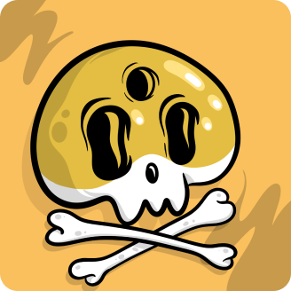
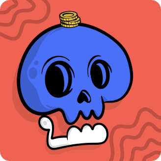
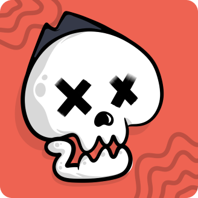
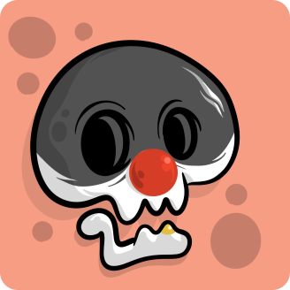
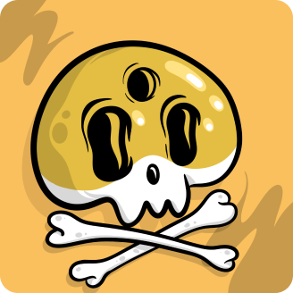
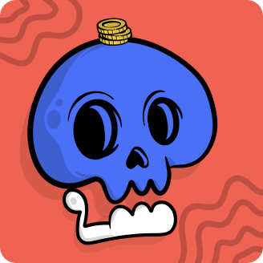
Il progetto “Capuzzelle NFT” rappresenta la trasformazione di uno dei luoghi più suggestivi e misteriosi di Napoli in un’opera digitale unica. Le capuzzelle del cimitero delle fontanelle sono teschi posti sulla superficie delle pareti antropizzate con l’obiettivo di liberare le anime dei defunti che, altrimenti, sarebbero rimaste in eterno in balia del limbo. Con gli NFT, queste capuzzelle diventano oggetti digitali dotati di una nuova vita, grazie alla tecnologia blockchain che ne garantisce l’autenticità e l’unicità. La collezione rappresenta un omaggio alla cultura e alla tradizione napoletana, ma anche un esempio di come l’arte digitale possa rielaborare e arricchire il patrimonio culturale del nostro paese.
ruolo
ruolo
Il minting di NFT è il processo di creazione di un token non fungibile (NFT) su una rete blockchain.
Per effettuare il minting di NFT è necessario disporre di una connessione internet, un portafoglio digitale (wallet) e un token nativo della blockchain su cui si vuole creare l'NFT.
I file comuni utilizzati per il minting di NFT includono immagini, video, audio e altri tipi di contenuti digitali.
Le piattaforme più popolari per il minting di NFT includono Ethereum, Binance Smart Chain, Polygon, Tezos e molti altri.
Il costo del minting di NFT può variare a seconda della piattaforma utilizzata, del tipo di file utilizzato e del valore dell'NFT creato.
Un token fungibile è uno scambio equivalente a un altro dello stesso valore, come una valuta digitale come il Bitcoin. D'altra parte, un token non fungibile è unico e irripetibile, come un'opera d'arte, un oggetto da collezione o un biglietto autografato.
Gli NFT possono essere acquistati o venduti su diverse piattaforme online che offrono servizi di trading. Assicurati di fare attenzione alle commissioni di transazione e alle politiche di conservazione della piattaforma prima di procedere con l'acquisto o la vendita.
Gli NFT vengono registrati sulla blockchain e vengono quindi garantiti dall'immutabilità e dalla trasparenza di questo registro. Alcuni proprietari di NFT scelgono inoltre di conservare i loro token in portafogli freddi o wallet hardware per una maggiore sicurezza.
Alcune delle tendenze più recenti nel mondo del minting di NFT includono l'utilizzo della tecnologia blockchain per combattere la contraffazione, l'uso di NFT come garanzia per prestiti e la creazione di NFT "smart" che consentono di sbloccare l'accesso a contenuti o servizi specifici.
Puoi trovare ulteriori informazioni sul minting di NFT sul sito del progetto blockchain che utilizzi o tramite risorse online come blog specializzati, forum e comunità di utenti.

Copyrights – 2023 'E CAPUZZELLE by Lorenzo Gravina & Antonio Ferraioli . All rights reserved